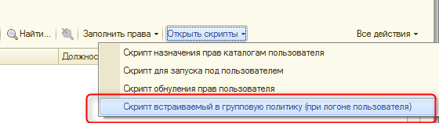

Возможности
На основе справочника "Структура предприятия" используется механизм, который позволяет автоматически создавать структуры папок Windows на основе данных о пользователях Active Directory предприятия.
Возможность формирования и запуска скриптов (назначающих права пользователям к определенным папкам), в зависимости от настроек структуры предприятия (начальный скрипт находится в макете справочника "Скрипт назначения прав каталогам пользователя" ).
Начальный путь к основной корневой обменной папке и название домена сети задается в настройках системы, на закладке "Работа с файлами" - "Путь к корню каталогов" / "Домен предприятия". В случае если необходимо осуществить разделение по организациям, то к Группе AD структуры предприятия можно заполнить поле ввода "Организация" и в ней указать необходимые настройки путей.
Настройка
Структуру подразделений необходимо настроить вручную. Запрещена вложенность с признаком "Автоматическое создание папок" более 2х.
Для настройки расписания запуска механизма создания структуры/обновления прав пользователей необходимо настроить расписание основного регламентного задания: Актуализация данных из Active Directory.
Для настройки расписания запусках механизма актуализации размеров каталогов пользователей необходимо настроить расписание основного регламетного задания: Актуализация размеров каталогов пользователей.
Для контроля квоты каталогов необходимо создать и настроить расписание регламетного задания: Контроль квот каталогов пользователей. Регламентное задание осуществляет анализ регистра актуальных размеров каталогов пользователей и выявляет всех пользователей у кого существует превышение по размеру личной папки. Всем выявленным рассылается персональное письмо на личный Email, а также сводное письмо администраторам (группа доступа "Администраторы").
Настройка служебных каталогов
Для начала работы со структурой каталогов необходимо подготовить основной служебный каталог в сети. Права доступа к каталогу: для сервера 1С полные, для пользователей только ЧТЕНИЕ и ВЫПОЛНЕНИЕ. Указать в предопределенном элементе "Служебная папка" в поле ввода "Путь к каталогу подразделения" путь к служебному каталогу (галочка "Включено автоматическое создание папок" необходимо отключить).
В настройках системы на закладке "Управление AD" необходимо заполнить поля ввода путей корня каталогов и домен предприятия. В случае если планируется использование контроля списка баз 1С, то включить флажок "Использовать контроль списка баз 1С". Поле ввода "Путь к корню переносного профилю" заполняется, если в организации используется дополнительно тонкие клиенты.
В групповой политике необходимо встроить скрипт, которой должен запускаться при авторизации пользователя в Windows (или добавить в назначенные задании на компьютере пользователя). Данный скрипт осуществляет поиск и выполнение основного скрипта пользователя в служебном каталоге (служебный каталог всегда доступен из сети и контролируется 1С). Скрипт пользователя в служебном каталоге подключает сетевые диски и контролирует списки баз 1С.
Для формирования скрипта авторизации пользователя необходимо нажать команду "Скрипт встраиваемый в групповую политику" в подменю "Открыть скрипты" и сохранить с расширением vbs.

Схема работы со структурой каталогов